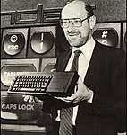
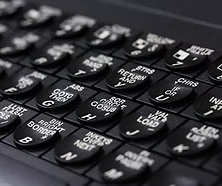
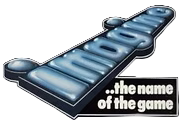
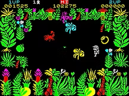
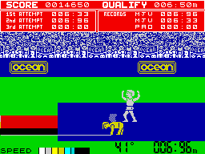

1984 - The Home Computer Slump
The post-Christmas slump of 1984 was the most severe yet, but the year still began with a glut of new games, two new magazines - Crash and Your Spectrum - and a new computer from Sinclair.

The QL was originally conceived as a portable business machine with an integral flat screen. What it ended up as was a flawed, shoddily-built home computer. Its release in the sales desert of January couldn't have been worse planned, either. Despite Sir Clive's appearance in a promotional TV ad, the public greeted the QL with caution and reviews were cool. Several years into the home computer revolution, the Spectrum was beginning to look dated, with competitors' machines sporting proper keyboards and bigger memories. Something new was expected by Sinclair's loyal support and the QL wasn't it.
A 'Super Spectrum' had been under development, but complacency on the part of Sir Clive caused him to cancel the project, convinced there was no need for a new model while the existing Spectrum remained so popular. When it became apparent that a replacement was needed sooner rather than later, there wasn't enough time to develop one from scratch, so Sinclair opted for a cheap stopgap: the Spectrum Plus.

The Plus was essentially an old Spectrum housed in a QL-style keyboard. There were no new features to speak of, nor was there an increase in memory. It was released in October 1984, by which time all the major retailers had already stocked up on the old model - all, that is, except WH Smith, who had presumably been tipped-off by Sinclair in advance. The rest of the high street was stuck with thousands of computers that had been rendered semi-obsolete. Furthermore, reports were filtering back to the press about the unreliability of the new Spectrum. Sinclair's reputation with retailers, press and public was beginning to crumble.
CRASH
Although Sinclair's fortunes were on the wane throughout 1984, the games market recovered from an early slump and a rude awakening to finish the year full of promise, having thrown up more exceptional titles than ever. It also witnessed the launch of a new magazine, Crash, which finally gave the kids what they wanted: a games-orientated, review-heavy publication, as opposed to yet another technical rag aimed at older readers.

Crash's editor and co-founder Roger Kean wrote most of the early issues himself, relying on local school children for his reviews. Despite its amateurish roots, it was blessed with a genuine enthusiasm for games and sublime artwork by Oliver Frey. Crash perfectly captured the playground fervour surrounding the Spectrum and its software, and became an important focal point for the gaming community. It was an instant hit and would remain the market leader for years to come.
Commercial Break
In the software world, one event dominated all others: the fall of Imagine. Such was the company's profile at the time, that its demise was taken by many to represent the death throes of another passing fad, but in truth the issue was more complex than an adolescent craze running its course.
After the success of its 1982 game Arcadia, Imagine had spent the following year advertising extravagantly and making impressive boasts about forthcoming projects. It even made the national press with a story of how 16-year old programmer Eugene Evans was earning £35,000 a year and owned a car he was too young to drive. Imagine burnished its image by renting plush offices in Liverpool, the heartland of Britain's software industry, and filling it with piles of computers, ranks of young programmers and a car park full of sports cars.
In the run-up to Christmas 1983, Imagine had bought the entire capacity of the country's largest tape duplicator, but its efforts to foil the competition backfired disastrously and the New Year left it with a warehouse full of unsold stock. In desperation, prices were dropped, enraging retailers who were expected to sacrifice their profits.

A series of misguided ventures (such as the dongle-based 'mega games') and a failure to address the company’s underlying problems sealed Imagine’s fate. In the aftermath, it became clear that Imagine had never been the company it had claimed to be. The expensive cars and offices had all been rented, the advertising never paid for, and its image a self-invented sham. In fact, few of Imagine’s games had ever been as good as its publicity promised, and in the end the only bubble to have burst was that of its own hype.
Nevertheless, the national press seized on the story with doom-and-gloom predictions about it marking the end of the country’s brief fascination with home computing. To make matters appear worse, it was a year in which a record number of software companies went bust, although the reason for this decline wasn't, as widely suggested, down to diminishing interest levels.
A Difficult Time
The pace of development over the previous year had seen a proliferation of software houses, all eager to get their hands on a slice of the cake. Unfortunately, the cake was smaller than the hype around it suggested and the market became flooded with software of dubious quality, fighting for the custom of an increasingly discerning public. Major retailers found themselves stocking up with sub-standard games they couldn’t shift, and were reluctant to buy in new titles until they had done so. This bottleneck impacted on distributors and in turn on software houses that couldn’t get new releases into the shops. As the cash dried up, many companies slipped into bankruptcy and rumours of a crisis began.
The lesson high street shops learnt from this experience was to deal in more mainstream games and avoid riskier, less obviously marketable titles. This helped sort the wheat from the chaff, but also made it difficult for original games to find their way onto the shelves, let alone sell. A prime example was Automata's Deus Ex Machina. Despite heavy advertising, critical praise and an industry award, it sold just 700 copies in its first two months of release. It was an unusual and demanding game, but the decision that it was not good enough was made by shops, not customers. By controlling the supply, retailers governed the demand.
This state of affairs didn't lead to a terminal decline and many superior games still found their way into the shops, even at the height of the crisis. It did change attitudes within the industry, though, encouraging a more professional approach among established players and putting such a squeeze on smaller companies that they either went bust or turned to mail order and specialist shops to sell their wares.
Most Spectrum owners were probably unaware of the extent of these upheavals in the software scene, or even that there was a problem at all, since there were more impressive games released in 1984 than ever before. Playgrounds across Britain became marketplaces for copied software, playing tips and game-hacking POKEs. Pocket money that had previously been blown on sweets and comics was now saved towards new releases. Saturday morning shopping trips, once a drag, became exciting opportunities to check out the latest releases and maybe part with some of that cash.
Gaming Innovation
Arcade shoot 'em ups had dominated the previous year, but it was the platform game that ruled the roost in 1984. Jet Set Willy, Matthew Smith's follow-up to Manic Miner, was the most eagerly awaited game of the year and became an instant classic, despite being devilishly difficult (partly due to the infamous 'attic bug'). Other superior platformers included Gremlin's excellent Wanted: Monty Mole and the lovable Chuckie Egg from A&F.

Ultimate started the year by unleashing the brilliant Lunar Jetman and the frantic Atic Atac, chipped in with the fun and colourful Sabrewulf during the summer, and capped things off with the ground-breaking Knight Lore, a beautiful 3D platformer.
In 1988, Ultimate’s Stamper brothers revealed that Knight Lore had actually been completed several months before Sabrewulf. They felt that if Knight Lore had been released first, sales of Sabrewulf would have suffered. Perhaps due to this decision, Sabrewulf went on to become the best-selling Spectrum game of all time, shifting more than 350,000 copies (despite Activision's later claims about Ghostbusters).
Another trend that kicked off in 1984 was the tie-in. Richard Wilcox Software (soon to become Elite Systems) started things off with Blue Thunder, which was never officially licensed, and Airwolf, which was. The year would end with companies fighting for the rights to produce licensed spin-offs of popular films and TV shows, which virtually guaranteed healthy sales, irrespective of quality.
Despite the enduring appetite for quickfire action titles, software firms began to recognise the interest in slower-paced games. Melbourne House did well with adventures Hampstead and Sherlock, and with Mugsy, a flawed but original strategy/adventure. In July, Beyond released Mike Singleton's Lords of Midnight, a vast Tolkien-esque epic, blessed with wonderful graphics and dripping with atmosphere. For many people, this was the sort of game they had been waiting for since home computing began.
Other memorable releases were Design Design's cockpit shooter Dark Star, with its super-smooth vector graphics, Gargoyle's inspired Tir Na Nog, and fun arcade-adventure Skool Daze. Then there was Micromega's 3D Deathchase, one of the great Spectrum titles, which sent players on a bum-cheek-clenching first-person motorcycle race through a forest.

Following the departure of Matthew Smith to Software Projects, Bug Byte struggled to release anything of note. Quicksilva also fell quiet towards the end of the year, having started strongly with the revolutionary 3D Ant Attack, the sprightly Bugaboo, and the colourful Fred.
Ocean Software gathered momentum throughout the year, starting with the coin-op conversion Hunchback and finishing with smash hit Olympics tie-in Daley Thompson's Decathlon, which reduced many a Spectrum keyboard to rubble. Its other notable moves were to buy up the well-known Imagine name for future releases, and to join forces with software distributors Centre Soft, to import, manufacture and market American software under the name of US Gold.
An Ambiguous Ending
A lot of companies spent the latter part of 1984 working on games for the Commodore 64. September’s PCW Show at Olympia, which normally showcased Christmas releases, was a disappointing event with a dearth of new titles. What did appear, however, was generally of good quality.
Many of the survivors of the home computing shakeout reached the end of the year like damaged warships limping back to port, uncertain whether they'd survive to fight another day. In Digerati Glitterati by Christopher Langdon and David Manners, Psion's David Potter recalled the state of play:
“I remember going to a party at Clive Sinclair's house in Cambridge - The Stone House - around about December 20th, 1984. I went to this party, this wonderful party, it was giant, everybody in the industry was there. There were lights strung up all around and there was grand food and it was meant to be a celebration of this great success. And it was a great party. But there was an atmosphere about that party where everybody - well not everybody, but certain people - knew that their companies were effectively bankrupt.”